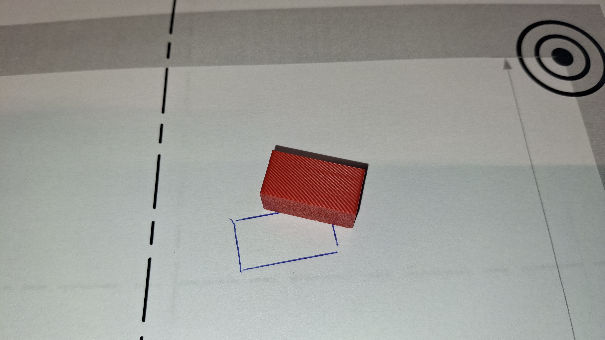
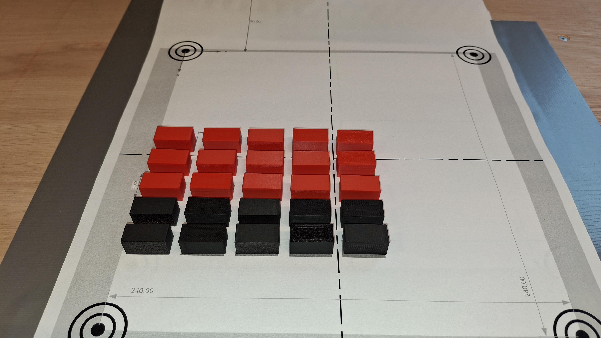
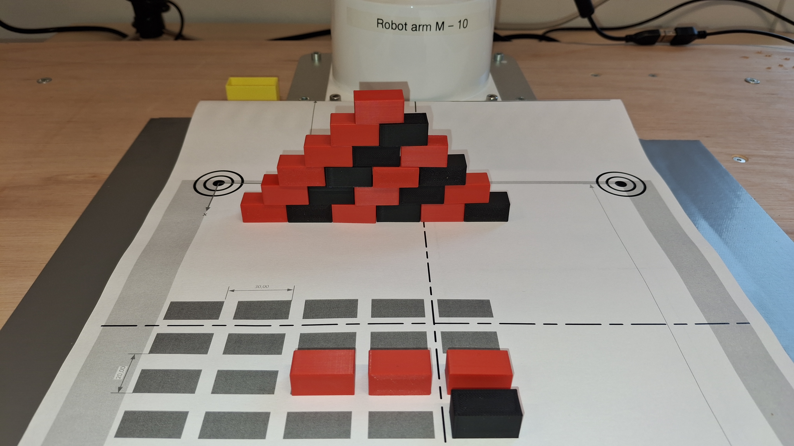
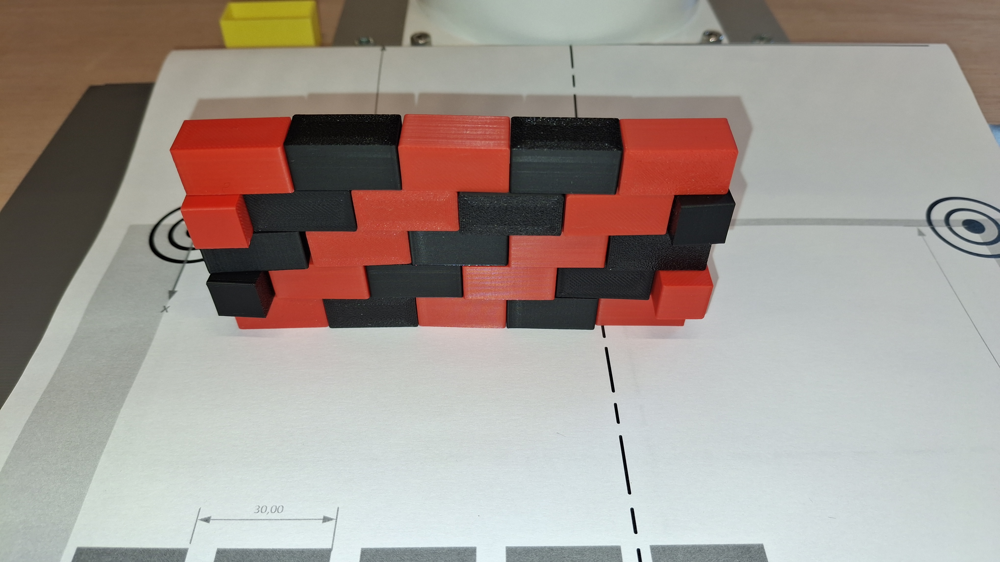

Opdracht 1: Part picking and placing
Opdracht 1.1: Robot testen met de webinterface
Controleer of de robot correct is aangesloten en ingeschakeld. Open de webinterface van de robot door in je browser het IP-adres van de robot in te voeren gevolgd door :18333. Bijvoorbeeld:
192.168.1.100:18333
Vervang 192.168.1.100 door het IP-adres van jouw robot.
Zorg ervoor dat je de robot kunt besturen via de webinterface voordat je verder gaat met de volgende opdrachten.
Opdracht 1.2: Robot testen met Python programma
Open in Visual Code het voorbeeldprogramma PositionDemo.py en voer het uit om te controleren of de robot correct reageert op de commando’s vanuit het Python programma.
Notitie
Het programma zal naar alle waarschijnlijkheid niet goed functioneren omdat het IP-adres van de robot nog niet correct is ingesteld in het programma. Pas het IP-adres aan naar het IP-adres van jouw robot. Zoek in het programma de volgende regel en vervang het IP-adres door het IP-adres van jouw robot:
robot_ip = "192.168.1.193"
Je zult deze handeling voor elk Python programma dat je gebruikt om de robot te besturen moeten uitvoeren.
Bestudeer het voorbeeldprogramma en let op hoe de commando’s naar de robot worden gestuurd. Probeer vervolgens zelf enkele commando’s aan te passen en uit te voeren om vertrouwd te raken met het besturen van de robot via Python.
Elk programma bevat in ieder geval de volgende regels:
robot = XArmAPI(robot_ip)
robot.connect()
robot.clean_error()
robot.motion_enable(True)
robot.set_mode(0)
robot.set_state(0)
De functies zijn gedocumenteerd in de API documentatie van de XArm robot. Zie XArm API documentatie.
Om de robot naar een bepaalde positie te bewegen, kun je de functie robot.set_position(x, y, z, roll, pitch, yaw) gebruiken. Hierbij zijn x, y en z de coördinaten van de positie en roll, pitch en yaw de oriëntatie van het gereedschap. Bijvoorbeeld:
robot.set_position(200, 0, 100, 0, 0, 0)
We noemen deze methode het bewegen naar een positie in de cartesiaanse ruimte.
je kunt de robot ook naar een postie d.m.v. joint coördinaten bewegen met de functie robot.set_joint_position(j1, j2, j3, j4, j5, j6). Hierbij zijn j1 tot en met j6 de hoeken van de gewrichten. Bijvoorbeeld:
robot.set_joint_position(0, 0, 0, 0, 0, 0)
We noemen deze methode het bewegen naar een positie in de gewrichtsruimte.
Opdracht 1.3: Bewegen naar posities
Teken een voorwerp(welke past in de grippe van de robot) af op de workspace(wit vel onder de robot).

Bepaal vervolgens de coördinaten van een positie boven het voorwerp waar de robot naartoe moet bewegen. Je kunt hierbij gebruik maken van een toolprint_robot_position.py om de huidige positie van de robot te printen en de coördinaten te bepalen. Wanneer deze tool gestart is kun je de robot handmatig verplaatsen en de coördinaten aflezen om de gewenste positie te bepalen.
Maak een programma dat de robot naar de eerder bepaalde positie boven het voorwerp beweegt met behulp van de functie robot.set_position(x, y, z, roll, pitch, yaw). Zorg ervoor dat de z-waarde hoog genoeg is zodat de robot niet tegen het voorwerp botst. We noemen dit de pick-positie.
Bepaal vervolgens een drop-positie, dat is een positie boven de plek waar het voorwerp neergelegd moet worden. Beplaal deze postie in de gewrichtsruimte met de tool print_robot_joints.py om de gewrichtshoeken te bepalen. Gebruik vervolgens de functie robot.set_joint_position(j1, j2, j3, j4, j5, j6) om de robot naar deze positie te bewegen. We noemen dit de drop-positie.
Laat de robot 1-malig tussen de pick-positie en de drop-positie bewegen. En zorg ervoor det de robot aan het eind in een home-positie staat. De home-positie kan bijvoorbeeld worden bereikt met de functie robot.set_joint_position(<zelf parameters hier invullen>).
Opdracht 1.4: Oppakken van voorwerpen
Breid het programma uit zodat de robot het voorwerp kan oppakken. Dit kan bijvoorbeeld door de robot eerst naar de pick-positie te bewegen, vervolgens de gripper te sluiten om het voorwerp vast te grijpen, en daarna naar de drop-positie te bewegen om het voorwerp neer te leggen. Zorg ervoor dat de robot aan het eind weer in de home-positie staat.
Je kunt de gripper openen en sluiten met de functies robot.set_vacuum_gripper(True) en robot.set_vacuum_gripper(False). Bijvoorbeeld:
robot.set_vacuum_gripper(True)
robot.set_vacuum_gripper(False)
Opdracht 1.5: Herhalen van het oppakken
Breid het programma verder uit zodat de robot meerdere voorwerpen kan oppakken en verplaatsen. Zorg ervoor dat de robot telkens terugkeert naar de home-positie na het neerleggen van een voorwerp. Je kunt hiervoor bijvoorbeeld een lijst van pick- en drop-posities bijhouden en een lus gebruiken om de robot door deze posities te laten bewegen.
Een voorbeeld van hoe je dit kunt doen:
pick_positions = [(x1, y1, z1, roll1, pitch1, yaw1), (x2, y2, z2, roll2, pitch2, yaw2)]
drop_positions = [(j1_1, j2_1, j3_1, j4_1, j5_1, j6_1), (j1_2, j2_2, j3_2, j4_2, j5_2, j6_2)]
for pick, drop in zip(pick_positions, drop_positions):
robot.set_position(*pick)
robot.set_vacuum_gripper(True)
robot.set_joint_position(*drop)
robot.set_vacuum_gripper(False)
robot.set_joint_position(<home_parameters>)
Opdracht 1.6: Bouwen van een muur
Druk de workspace RobotVisionWorkspaceBricks2Wall.pdf af en bepaal de posities van de stenen die gebruikt moeten worden om de muur te bouwen.

Gebruik vervolgens de eerder beschreven methoden om de robot de stenen op te laten pakken en op de juiste plek te plaatsen om een muur te bouwen.Het programma dient efficiënt de stenen op te pakken en op de juiste plek te plaatsen om een muur te bouwen. Dus alleen de postie van de eerste steen hoeft handmatig bepaald te worden, de rest kan relatief ten opzichte van de eerste steen worden berekend.

Notitie
Het RobotVisionWorkspaceBricks2Wall.pdf bestand kun je vinden in de support/workspace map van deze workshop. In de support/objects map vind je ook bestanden waarmee je stenen(bricks) kunt maken met behulp van een 3d-printer.
Opdracht 1.6.1: Uitdaging
maak een programma dat een muur bouwt volgens onderstaande afbeelding.
